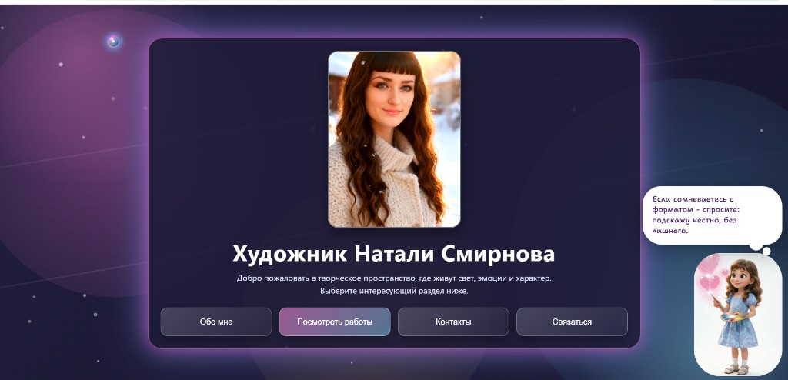
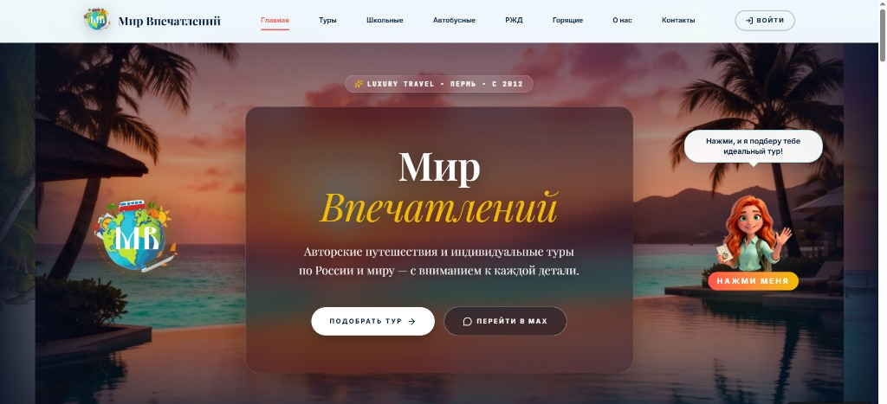
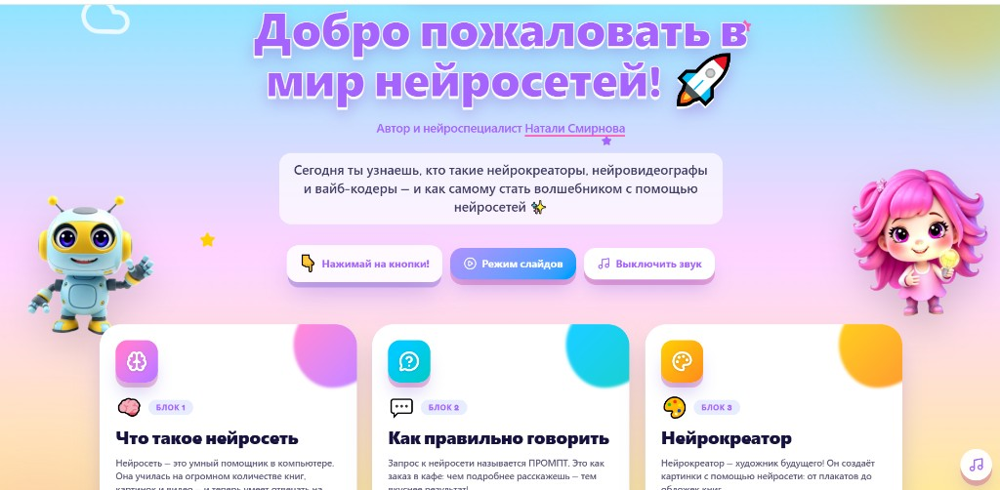
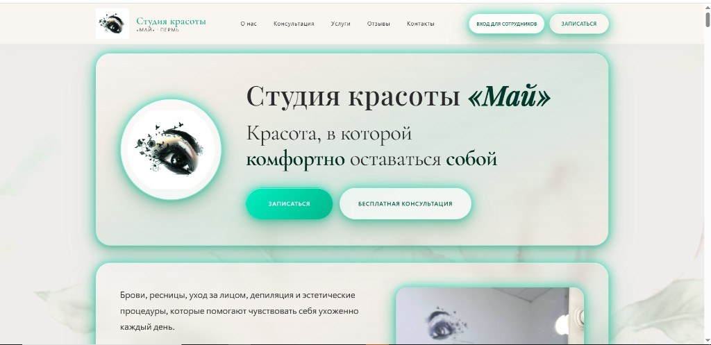

Лендинги
Сайты, которые не просто «есть», а собирают внимание, держат ритм и ведут человека по смыслу.
вайб-кодер · portfolio Натали Смирнова
Vibe Coder / Portfolio / Web & AI Experiences
Не просто «что-то сверстать», а собрать ощущение, стиль, логику и подачу так, чтобы проект хотелось открыть, листать и запомнить.
Я работаю на стыке кода, визуала, UX и AI-инструментов. Для меня сайт — это не набор блоков. Это ощущение от проекта, ритм, подача, структура и то, как человек чувствует себя внутри интерфейса.
Мой подход — сделать быстро, красиво и не бездумно. Чтобы проект не выглядел как очередной шаблон, собранный без вкуса и идеи.
Я делаю:
Сайты, которые не просто «есть», а собирают внимание, держат ритм и ведут человека по смыслу.
Страницы, которые показывают не только работы, но и стиль, характер и уровень.
Когда нужен не просто сайт, а ощущение: атмосфера, характер, настроение, подача.
Использую нейросети как инструмент ускорения и усиления идей, а не как замену мышлению.
Продумываю, как человек читает, куда смотрит, где теряется и где принимает решение.
Могу собрать сильную первую версию быстро, без месяцев бесконечных согласований.
Я смотрю не только на задачу, но и на ощущение, которое должен передавать проект.
Красивый сайт без логики — это просто красивая обёртка. Поэтому я собираю смысл, сценарий и путь пользователя.
Когда есть стиль и логика, проект собирается быстрее, точнее и выглядит сильно.
Живые проекты — можно открыть и посмотреть вживую.

art.pngСайт-портфолио художника: творческое пространство, где живут свет, эмоции и характер. Галереи портретов, шаржей, картин и оформления, разделы «Обо мне», контакты и форма заявки. Больше работ — в сообществе ВК: vk.ru/nataliyart.
Что сделано: структура, визуальная подача, галерея работ, форма связи, сборка и публикация.
Открыть сайт →
tur.pngСайт туроператора из Перми: авторские путешествия и индивидуальные туры по России и миру. Подбор маршрута, каталог направлений, AI-помощник Аврора, FAQ и форма заявки — с акцентом на luxury-подачу и ощущение «отдых как событие».
Что сделано: creative direction, структура, визуальная концепция, блок подбора туров, сборка.
Открыть сайт →
kids.pngИнтерактивный мастер-класс для детей 8–10 лет от Натали Смирновой: шесть блоков о нейросетях, промптах, нейрокреаторе, нейровидеографе и вайб-кодере. Режим слайдов, озвучка и игровая подача — чтобы сложное стало понятным и увлекательным.
Что сделано: структура, тексты, дизайн-концепция, интерактивные блоки, сборка.
Открыть сайт →
mai.pngЛендинг студии красоты в Перми: брови, ресницы, уход за лицом, депиляция и эстетические процедуры. Консультации, каталог услуг с ценами, отзывы клиентов, онлайн-запись и контакты — в спокойной эстетике естественной красоты.
Что сделано: структура, визуальная концепция, блок услуг, отзывы, форма записи, сборка и публикация.
Открыть сайт →Не «всё понравилось», а конкретика: что изменилось в подаче, скорости и ощущении от проекта.
Потому что я умею видеть проект целиком.
Не только:
но и:
эстетика + структура + digital-мышление + скорость
Но если честно — главный инструмент не стек, а вкус, насмотренность и умение собирать цельное впечатление.
Хороший сайт — это не когда «нормально сверстано». Это когда у проекта появляется энергия, форма и ощущение, что он живой.
Могу помочь с концепцией, структурой, упаковкой и реализацией. От первого вайба до готовой страницы.
Напиши в Telegram или на почту — обсудим задачу, вайб и первую версию.